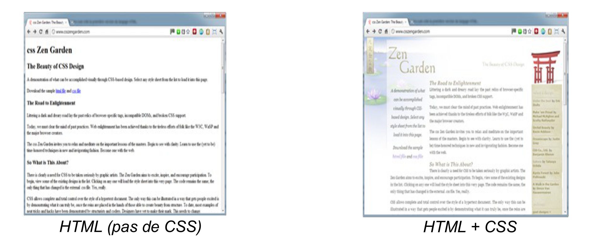
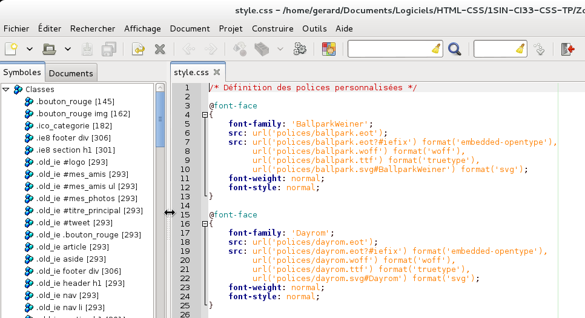

CSS
Introduction
Le CSS (Cascading Style sheets) est un langage qui complète le langage HTML. Alors que le HTML s'occupe du fond , le CSS s'occupe de la forme. Le HTML est né en 1991 et CSS en 1996. Avant 1996, la forme devait être donc intégré directement dans le fichier HTML ; ce qui entraînait des pages HTML complexes.
Un même fichier CSS peut être utilisé pour plusieurs pages, et permet donc diminuer le temps de création.
Dans cette activité, nous n'aborderons que les bases du CSS.

-------------------------------------------------------------------------------------------------------------------------------------------Ce sont les navigateurs Web qui font le travail le plus complexe : ils doivent lire le code CSS et comprendre comment afficher la page.
Au début des années 2000, Internet Explorer était le navigateur le plus répandu mais sa gestion du CSS est longtemps restée assez médiocre (pour ne pas dire carrément mauvaise). C'était la grande époque de la version 6 (IE6), hélas encore utilisée aujourd'hui par une petite partie des internautes (heureusement, cette proportion tend à diminuer).
Depuis, de nombreux navigateurs sont arrivés et ont chahuté Internet Explorer : Mozilla Firefox bien sûr, mais aussi Google Chrome. Safari. Cela a incité Microsoft à réagir et publier (après une longue période d'inactivité) IE 7, puis IE 8 et IE 9 et enfin IE 10.
------------------------------------------------------------------------------------------------------------------------------------------

Régi par la licence Creative Commons Attribution Non-commercial Share Alike 3.0 License